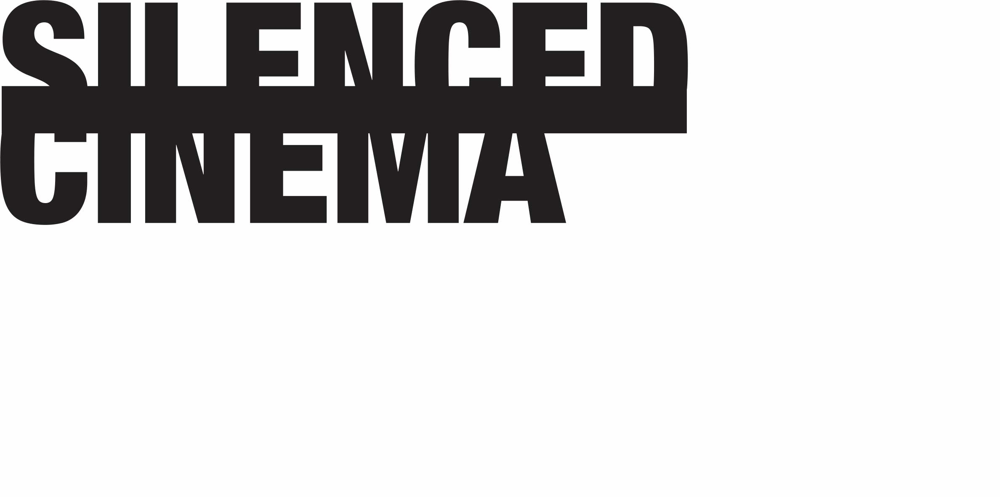

This work was part of a series consisting of three triptychs advertising a film festival only showing films that were banned around the world.
Each poster represents a day of the festival and shares what will happen on that day.
The bold terms noted focus on the overall theme of that day.
For this piece, I used the motif of a watchful eye.
To create repetiton, I cut out the eye by hand which distorted the image making an uncomfortable sight.